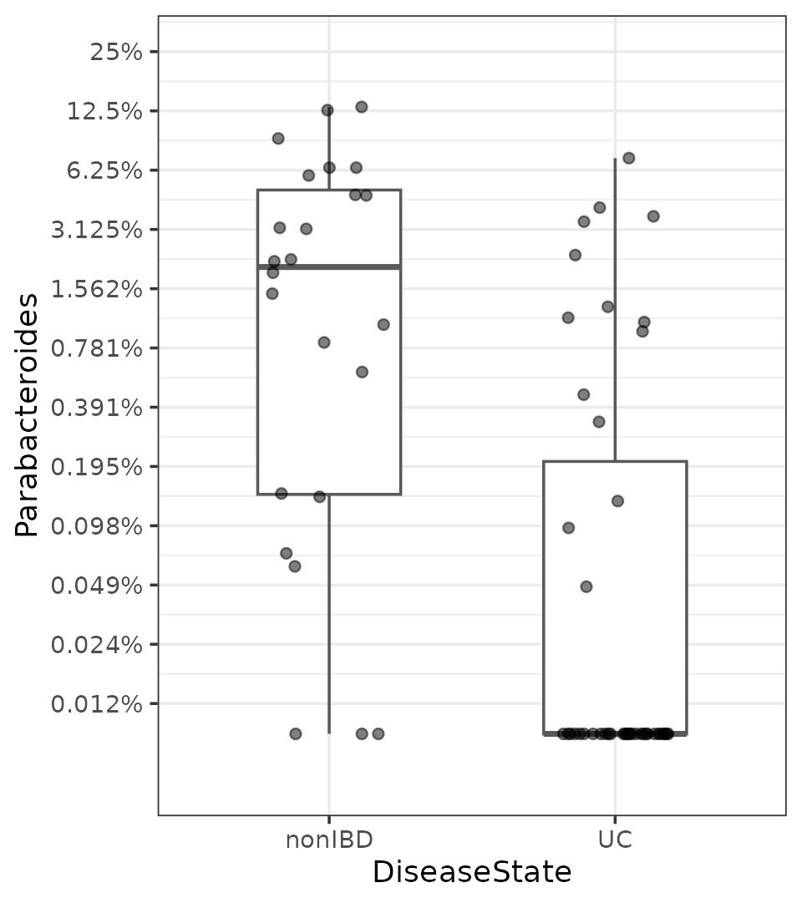
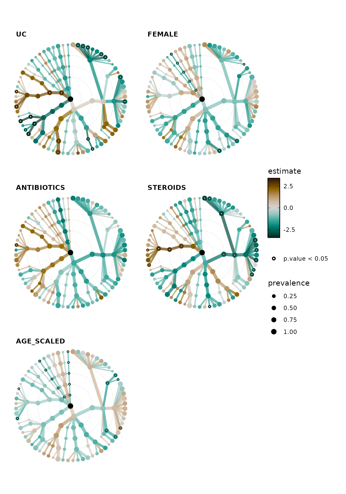
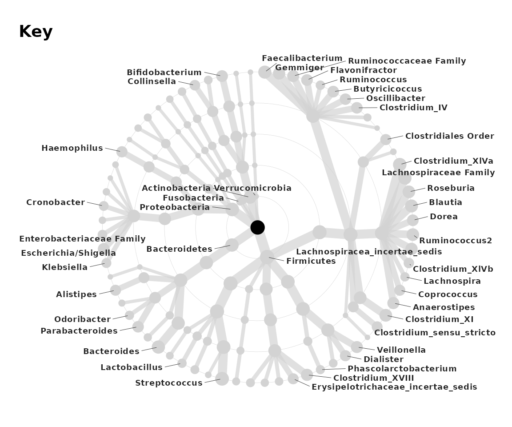
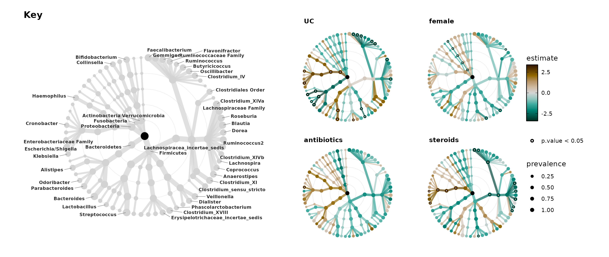
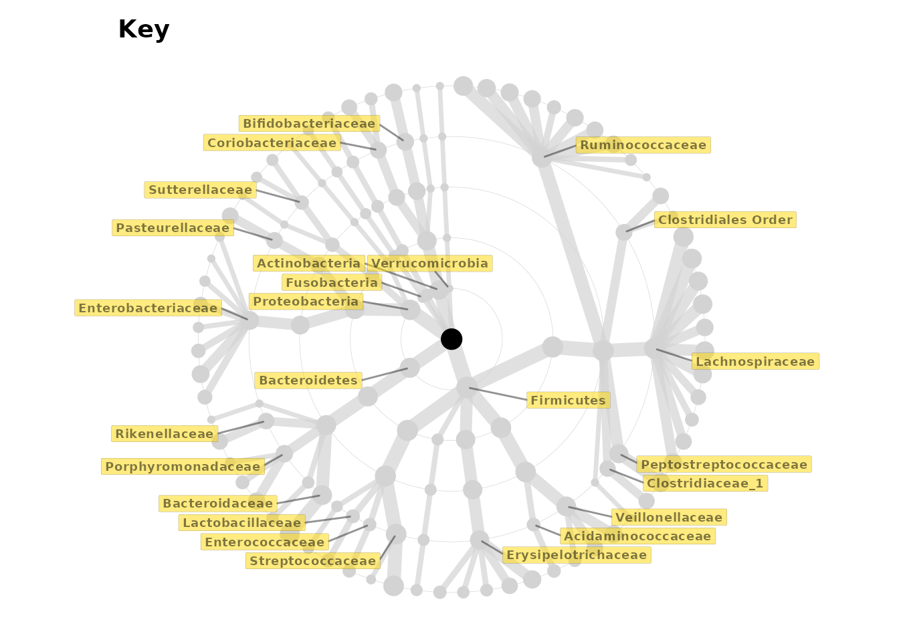
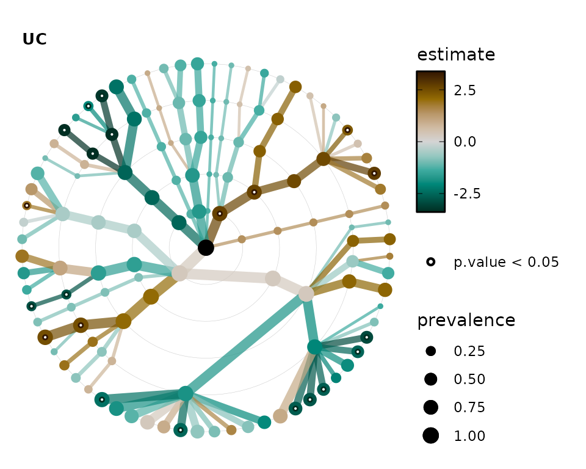
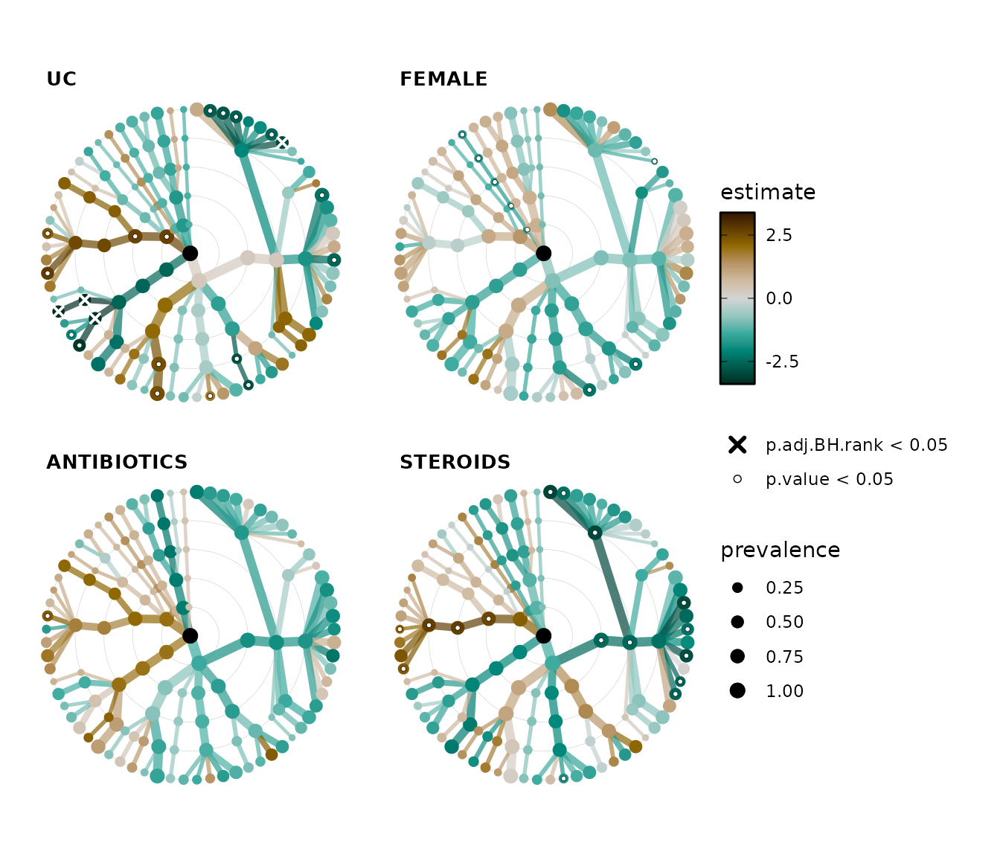
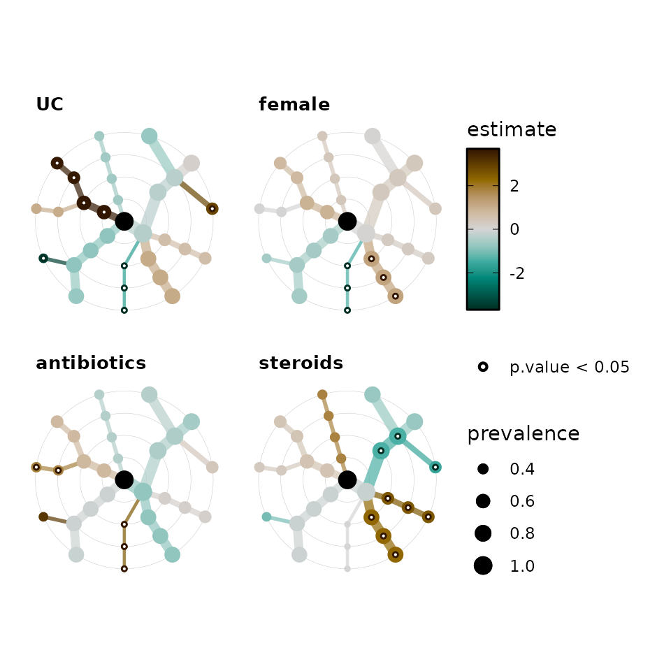
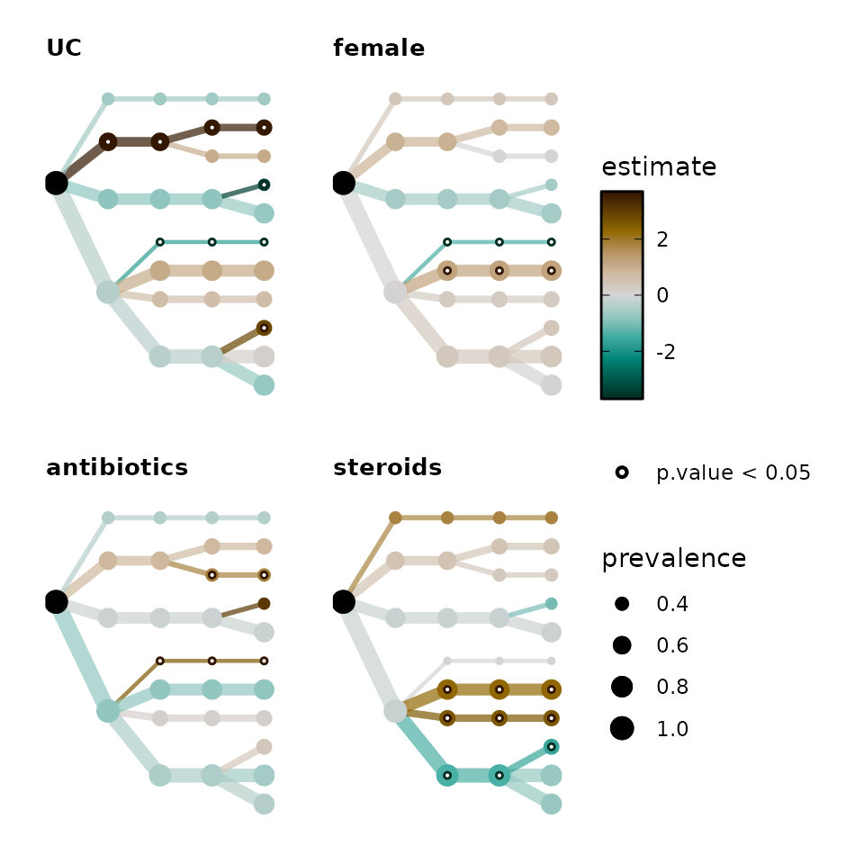

Statistical modelling of individual taxa
Source:vignettes/web-only/modelling-taxa.Rmd
modelling-taxa.RmdThis article will give an example of statistical modelling of the abundances of individual taxa, and visual presentation of the results using microViz taxonomic association tree plots.
Setup
library(microViz)
#> microViz version 0.10.4 - Copyright (C) 2022 David Barnett
#> ! Website: https://david-barnett.github.io/microViz
#> ✔ Useful? For citation details, run: `citation("microViz")`
#> ✖ Silence? `suppressPackageStartupMessages(library(microViz))`
library(corncob)
library(dplyr)
#>
#> Attaching package: 'dplyr'
#>
#> The following objects are masked from 'package:stats':
#>
#> filter, lag
#>
#> The following objects are masked from 'package:base':
#>
#> intersect, setdiff, setequal, union
library(ggplot2)First we’ll get some OTU abundance data from inflammatory bowel disease patients and controls from the corncob package.
data("ibd_phylo")
ibd_phylo
#> phyloseq-class experiment-level object
#> otu_table() OTU Table: [ 36349 taxa and 91 samples ]
#> sample_data() Sample Data: [ 91 samples by 15 sample variables ]
#> tax_table() Taxonomy Table: [ 36349 taxa by 7 taxonomic ranks ]We’ll keep only the Ulcerative Colitis and Healthy Control samples,
to simplify the analyses for this example. We’ll also remove the Species
rank information, as most OTUs in this dataset are not assigned to a
species. We’ll also use tax_fix to fill any gaps where the
Genus is unknown, with the family name or whatever higher rank
classification is known.
phylo <- ibd_phylo %>%
ps_filter(DiseaseState %in% c("UC", "nonIBD")) %>%
tax_mutate(Species = NULL) %>%
tax_fix()
phylo
#> phyloseq-class experiment-level object
#> otu_table() OTU Table: [ 29304 taxa and 67 samples ]
#> sample_data() Sample Data: [ 67 samples by 15 sample variables ]
#> tax_table() Taxonomy Table: [ 29304 taxa by 6 taxonomic ranks ]Let’s have a quick look at the sample data using the
skimr package.
phylo %>%
samdat_tbl() %>%
dplyr::mutate(across(where(is.character), as.factor)) %>%
skimr::skim()
#> Warning in sorted_count(x): Variable contains value(s) of "" that have been
#> converted to "empty".| Name | Piped data |
| Number of rows | 67 |
| Number of columns | 16 |
| _______________________ | |
| Column type frequency: | |
| factor | 15 |
| numeric | 1 |
| ________________________ | |
| Group variables | None |
Variable type: factor
| skim_variable | n_missing | complete_rate | ordered | n_unique | top_counts |
|---|---|---|---|---|---|
| .sample_name | 0 | 1 | FALSE | 67 | 003: 1, 004: 1, 005: 1, 009: 1 |
| sample | 0 | 1 | FALSE | 67 | 003: 1, 004: 1, 005: 1, 009: 1 |
| gender | 0 | 1 | FALSE | 2 | fem: 36, mal: 31 |
| DiseaseState | 0 | 1 | FALSE | 2 | UC: 43, non: 24 |
| steroids | 0 | 1 | FALSE | 2 | nos: 42, ste: 25 |
| imsp | 0 | 1 | FALSE | 2 | noi: 44, ims: 23 |
| abx | 0 | 1 | FALSE | 2 | noa: 53, abx: 14 |
| mesalamine | 0 | 1 | FALSE | 2 | nom: 61, mes: 6 |
| ibd | 0 | 1 | FALSE | 2 | ibd: 43, non: 24 |
| activity | 0 | 1 | FALSE | 5 | con: 24, mil: 15, ina: 11, mod: 9 |
| active | 0 | 1 | FALSE | 3 | act: 32, con: 24, ina: 11 |
| race | 0 | 1 | FALSE | 5 | Whi: 54, Bla: 4, Oth: 4, nof: 3 |
| fhx | 0 | 1 | FALSE | 7 | nof: 39, fhx: 17, non: 7, lev: 1 |
| imspLEVEL | 0 | 1 | FALSE | 7 | non: 21, sto: 11, lev: 9, lev: 9 |
| SampleType | 0 | 1 | FALSE | 2 | sto: 56, emp: 11 |
Variable type: numeric
| skim_variable | n_missing | complete_rate | mean | sd | p0 | p25 | p50 | p75 | p100 | hist |
|---|---|---|---|---|---|---|---|---|---|---|
| age | 0 | 1 | 12.09 | 4.81 | 3 | 8.5 | 12 | 15 | 24 | ▅▇▇▅▂ |
Let’s make some sample data variables that are easier to use and compare in the statistical modelling ahead. We will convert dichotomous categorical variables into similar binary variables (values: 1 for true, or 0 for false). We will also scale and center the numeric variable for age.
phylo <- phylo %>%
ps_mutate(
UC = ifelse(DiseaseState == "UC", yes = 1, no = 0),
female = ifelse(gender == "female", yes = 1, no = 0),
antibiotics = ifelse(abx == "abx", yes = 1, no = 0),
steroids = ifelse(steroids == "steroids", yes = 1, no = 0),
age_scaled = scale(age, center = TRUE, scale = TRUE)
)Modelling one taxon at a time
TSS log2 linear regression
We will start by creating a linear regression model for one genus, Bacteroides. We will transform the count data by first making it proportions, and then taking the logarithm, with base 2. This is what MaAsLin2 does by default (except they call the compositional transformation “Total Sum Scaling (TSS)”). We will replace the zeros with half the minimum observed abundance proportion (of any taxon) before log2 transformation.
parabacteroides_lm <- phylo %>%
tax_fix() %>%
tax_transform("compositional", rank = "Genus") %>%
tax_transform("log2", zero_replace = "halfmin", chain = TRUE) %>%
tax_model(
type = "lm", rank = "Genus", taxa = "Parabacteroides",
variables = c("UC", "female", "antibiotics", "steroids", "age_scaled"),
return_psx = FALSE
)
#> Modelling: Parabacteroides
parabacteroides_lm$Parabacteroides
#>
#> Call:
#> Parabacteroides ~ UC + female + antibiotics + steroids + age_scaled
#>
#> Coefficients:
#> (Intercept) UC female antibiotics steroids age_scaled
#> -6.36997 -4.20062 -0.62692 0.07118 -0.95014 0.19781
summary(parabacteroides_lm$Parabacteroides)
#>
#> Call:
#> Parabacteroides ~ UC + female + antibiotics + steroids + age_scaled
#>
#> Residuals:
#> Min 1Q Median 3Q Max
#> -7.344 -2.111 -1.308 2.297 7.492
#>
#> Coefficients:
#> Estimate Std. Error t value Pr(>|t|)
#> (Intercept) -6.36997 0.95271 -6.686 8e-09 ***
#> UC -4.20062 1.22791 -3.421 0.00112 **
#> female -0.62692 0.87225 -0.719 0.47505
#> antibiotics 0.07118 1.18629 0.060 0.95235
#> steroids -0.95014 1.11976 -0.849 0.39946
#> age_scaled 0.19781 0.49236 0.402 0.68926
#> ---
#> Signif. codes: 0 '***' 0.001 '**' 0.01 '*' 0.05 '.' 0.1 ' ' 1
#>
#> Residual standard error: 3.452 on 61 degrees of freedom
#> Multiple R-squared: 0.3109, Adjusted R-squared: 0.2545
#> F-statistic: 5.505 on 5 and 61 DF, p-value: 0.0003018This model suggests Parabacteroides abundances are significantly lower in Ulcerative Colitis patients than controls, on average.
Plotting TSS log2 data
Let’s boxplot the transformed data to see what this Parabacteroides association looks like as a crude group difference.
plot_data <- phylo %>%
tax_fix() %>%
tax_transform("compositional", rank = "Genus") %>%
tax_transform("log2", zero_replace = "halfmin", chain = TRUE) %>%
ps_get() %>%
ps_otu2samdat("Parabacteroides") %>% # adds Parabacteroides as sample data!
samdat_tbl()
ggplot(plot_data, aes(x = DiseaseState, y = Parabacteroides)) +
geom_boxplot(width = 0.5, colour = "grey35") +
geom_jitter(width = 0.2, alpha = 0.5) +
scale_y_continuous(
breaks = log2(1/2^(0:13)),
labels = function(x) paste0(100 * round(2^x, digits = 5), "%"),
limits = c(log2(0.00005), log2(0.25))
) +
theme_bw()
Beta binomial regression
You can also use other regression modelling functions that take a
formula. For example the beta binomial modelling provided in the corncob
package. This approach models both abundance and dispersion, and
directly uses untransformed counts. By default, microViz’s
tax_model() will use the same formula for both abundance
and dispersion modelling, but you can override this by setting the
phi.formula argument yourself. See
vignette("corncob-intro", package = "corncob") for more
info on these models.
parabacteroides_bb <- phylo %>%
tax_fix() %>%
tax_model(
type = corncob::bbdml, rank = "Genus", taxa = "Parabacteroides",
variables = c("UC", "female", "antibiotics", "steroids", "age_scaled"),
return_psx = FALSE
)
#> Modelling: Parabacteroides
parabacteroides_bb$Parabacteroides
#>
#> Call:
#> Parabacteroides ~ UC + female + antibiotics + steroids + age_scaled
#>
#>
#> Coefficients associated with abundance:
#> Estimate Std. Error t value Pr(>|t|)
#> (Intercept) -3.22672 0.67443 -4.784 1.33e-05 ***
#> UC -1.99769 0.93236 -2.143 0.0366 *
#> female -0.20320 0.65852 -0.309 0.7588
#> antibiotics -0.22137 1.56656 -0.141 0.8881
#> steroids 0.41015 1.47997 0.277 0.7827
#> age_scaled 0.04753 0.39951 0.119 0.9057
#> ---
#> Signif. codes: 0 '***' 0.001 '**' 0.01 '*' 0.05 '.' 0.1 ' ' 1
#>
#>
#> Coefficients associated with dispersion:
#> Estimate Std. Error t value Pr(>|t|)
#> (Intercept) -2.54699 0.85001 -2.996 0.00409 **
#> UC -0.93739 1.21342 -0.773 0.44311
#> female -0.12331 0.83238 -0.148 0.88277
#> antibiotics -0.16097 1.97520 -0.081 0.93534
#> steroids 1.57666 1.87989 0.839 0.40527
#> age_scaled -0.02351 0.52912 -0.044 0.96472
#> ---
#> Signif. codes: 0 '***' 0.001 '**' 0.01 '*' 0.05 '.' 0.1 ' ' 1
#>
#>
#> Log-likelihood: -211.25Model all the taxa!
Now we will fit a similar model for almost every taxon at every rank.
The code for taxatree_models is quite similar to
tax_model. However, you might need to run
tax_prepend_ranks to ensure that each taxon at each rank is
always unique. As an example of the problem, Actinobacteria is the name
of both a Phylum and a Class!
lm_models <- phylo %>%
tax_fix() %>%
tax_prepend_ranks() %>%
# it makes sense to perform the compositional transformation BEFORE filtering
tax_transform("compositional", rank = "Genus", keep_counts = TRUE) %>%
tax_filter(min_prevalence = 0.1, undetected = 0, use_counts = TRUE) %>%
tax_transform(
trans = "log2", chain = TRUE, zero_replace = "halfmin"
) %>%
taxatree_models(
type = lm,
ranks = NULL, # uses every rank available except the first
variables = c("UC", "female", "antibiotics", "steroids", "age_scaled")
)
#> Proportional min_prevalence given: 0.1 --> min 7/67 samples.
#> 2022-11-18 20:04:07 - modelling at rank: Phylum
#> 2022-11-18 20:04:07 - modelling at rank: Class
#> 2022-11-18 20:04:08 - modelling at rank: Order
#> 2022-11-18 20:04:08 - modelling at rank: Family
#> 2022-11-18 20:04:09 - modelling at rank: GenusWhy filter the taxa? It’s less likely that we are interested in rare taxa, and models of rare taxon abundances are more likely to be unreliable. Reducing the the number of taxa modelled also makes visualising the results easier!
lm_models
#> psExtra object - a phyloseq object with extra slots:
#>
#> phyloseq-class experiment-level object
#> otu_table() OTU Table: [ 68 taxa and 67 samples ]
#> sample_data() Sample Data: [ 67 samples by 19 sample variables ]
#> tax_table() Taxonomy Table: [ 68 taxa by 6 taxonomic ranks ]
#>
#> otu_get(counts = TRUE) [ 68 taxa and 67 samples ]
#>
#> psExtra info:
#> tax_agg = "Genus" tax_trans = "compositional&log2"
#>
#> taxatree_models list:
#> Ranks: Phylum/Class/Order/Family/GenusGetting stats from the models
Next we will get a data.frame containing the regression coefficient
estimates, test statistics and corresponding p values from all these
regression models. The function taxatree_models2stats() can
do this for any type of model that has a broom::tidy()
method, as well as for beta binomial regression models calculated with
the corncob package bbdml() function.
lm_stats <- taxatree_models2stats(lm_models)
lm_stats
#> psExtra object - a phyloseq object with extra slots:
#>
#> phyloseq-class experiment-level object
#> otu_table() OTU Table: [ 68 taxa and 67 samples ]
#> sample_data() Sample Data: [ 67 samples by 19 sample variables ]
#> tax_table() Taxonomy Table: [ 68 taxa by 6 taxonomic ranks ]
#>
#> otu_get(counts = TRUE) [ 68 taxa and 67 samples ]
#>
#> psExtra info:
#> tax_agg = "Genus" tax_trans = "compositional&log2"
#>
#> taxatree_stats dataframe:
#> 134 taxa at 5 ranks: Phylum, Class, Order, Family, Genus
#> 5 terms: UC, female, antibiotics, steroids, age_scaled
lm_stats %>% taxatree_stats_get()
#> # A tibble: 670 × 8
#> term taxon rank formula estim…¹ std.e…² stati…³ p.value
#> <fct> <chr> <fct> <chr> <dbl> <dbl> <dbl> <dbl>
#> 1 UC P: Firmicutes Phylum `P: Firm… -22.3 13.6 -1.64 0.107
#> 2 female P: Firmicutes Phylum `P: Firm… -11.7 9.66 -1.21 0.230
#> 3 antibiotics P: Firmicutes Phylum `P: Firm… -19.8 13.1 -1.51 0.137
#> 4 steroids P: Firmicutes Phylum `P: Firm… -32.7 12.4 -2.63 0.0107
#> 5 age_scaled P: Firmicutes Phylum `P: Firm… -0.600 5.45 -0.110 0.913
#> 6 UC P: Bacteroidetes Phylum `P: Bact… -13.8 4.15 -3.32 0.00151
#> 7 female P: Bacteroidetes Phylum `P: Bact… -1.21 2.95 -0.410 0.683
#> 8 antibiotics P: Bacteroidetes Phylum `P: Bact… 1.37 4.01 0.342 0.734
#> 9 steroids P: Bacteroidetes Phylum `P: Bact… -4.36 3.79 -1.15 0.255
#> 10 age_scaled P: Bacteroidetes Phylum `P: Bact… -0.937 1.67 -0.563 0.576
#> # … with 660 more rows, and abbreviated variable names ¹estimate, ²std.error,
#> # ³statisticAdjusting p values
Using the taxatree_stats_p_adjust() function, you can
correct for multiple testing / control the false discovery rate or
family-wise error rate.
Instead of applying these adjustment methods across all 88 taxa models at all ranks, the default behaviour is to control the family-wise error rate per rank.
lm_stats <- taxatree_stats_p_adjust(
data = lm_stats, method = "BH", grouping = "rank"
)
# notice the new variable
lm_stats %>% taxatree_stats_get()
#> # A tibble: 670 × 9
#> # Groups: rank [5]
#> term taxon rank formula estim…¹ std.e…² stati…³ p.value p.adj…⁴
#> <fct> <chr> <fct> <chr> <dbl> <dbl> <dbl> <dbl> <dbl>
#> 1 UC P: Firmicu… Phyl… `P: Fi… -22.3 13.6 -1.64 0.107 0.391
#> 2 female P: Firmicu… Phyl… `P: Fi… -11.7 9.66 -1.21 0.230 0.473
#> 3 antibiotics P: Firmicu… Phyl… `P: Fi… -19.8 13.1 -1.51 0.137 0.399
#> 4 steroids P: Firmicu… Phyl… `P: Fi… -32.7 12.4 -2.63 0.0107 0.125
#> 5 age_scaled P: Firmicu… Phyl… `P: Fi… -0.600 5.45 -0.110 0.913 0.940
#> 6 UC P: Bactero… Phyl… `P: Ba… -13.8 4.15 -3.32 0.00151 0.0530
#> 7 female P: Bactero… Phyl… `P: Ba… -1.21 2.95 -0.410 0.683 0.828
#> 8 antibiotics P: Bactero… Phyl… `P: Ba… 1.37 4.01 0.342 0.734 0.828
#> 9 steroids P: Bactero… Phyl… `P: Ba… -4.36 3.79 -1.15 0.255 0.495
#> 10 age_scaled P: Bactero… Phyl… `P: Ba… -0.937 1.67 -0.563 0.576 0.776
#> # … with 660 more rows, and abbreviated variable names ¹estimate, ²std.error,
#> # ³statistic, ⁴p.adj.BH.rankPlot all the taxatree_stats!
taxatree_plots() allows you to plot statistics
(e.g. point estimates and significance) from all of the taxa models onto
a tree layout. The taxon models are organised by rank, radiating out
from the central root node from e.g. Phyla around the center to Genera
in the outermost ring.
taxatree_plots() itself returns a list of plots, which
you can arrange into one figure with the patchwork
package for example (and/or cowplot).
lm_stats %>% taxatree_plots(
node_size_range = c(1, 3), var_renamer = toupper
) %>%
patchwork::wrap_plots(
ncol = 2, guides = "collect"
)
Taxatree Key
But how do we know which taxa are which nodes? We can create a
labelled grey tree with taxatree_plotkey. This labels taxa
based on certain conditions.
set.seed(123) # label position
key <- taxatree_plotkey(
data = lm_stats,
taxon_renamer = function(x) stringr::str_remove(x, "[PFG]: "),
# 2 lines of conditions below, for filtering taxa to be labelled
rank == "Phylum" | rank == "Genus" & prevalence > 0.25,
!grepl("Kingdom", taxon)
) +
# add a bit more space for the longer labels by expanding the x axis
scale_x_continuous(expand = expansion(mult = 0.2))
# all phyla are labelled, and all genera with a prevalence of over 0.2
# except for any taxa whose names (partly) match "Kingdom"
# (i.e. an unclassified taxon)
key
Key + Trees
Let’s put the key and some of the trees together in one
patchwork figure. Getting the sizing right on these
combined plots can be very tricky! Pay attention to the absolute height
and width of the plot output.
gridExtra::grid.arrange() or
cowplot::plot_grid() are alternatives you can also try.
cowplot::get_legend() can be particularly useful.
trees <- lm_stats %>%
taxatree_plots(node_size_range = c(1, 2.25)) %>%
.[1:4] %>%
patchwork::wrap_plots(
ncol = 2, guides = "collect"
)
panel <- patchwork::wrap_plots(key, trees, nrow = 1, widths = 8:7)
set.seed(111)
panel
You could save the plot with ggsave() like this.
Alternative label styling
You can change the default styling of the labels by first suppressing
the automatic drawing of labels with .draw_label = FALSE in
taxatree_plotkey() and then adding your own custom-style
labels with taxatree_plot_labels(). Here we will draw some
yellow labels.
taxatree_plotkey(
data = lm_stats, .draw_label = FALSE,
rank %in% c("Phylum", "Family") & !grepl("Bacteria", taxon),
prevalence > 0.2 | rank == "Phylum"
) %>%
taxatree_plot_labels(
taxon_renamer = function(x) stringr::str_remove(x, "[PFGO]: "),
# default fun is ggrepel::geom_text_repel
fun = ggrepel::geom_label_repel,
# arguments modifying label style
size = 2.5, alpha = 0.5, colour = "black", fill = "gold1",
label.size = 0.05, label.r = unit(0.05, "lines"),
label.padding = unit(0.15, "lines"), segment.size = 0.5,
# arguments affecting label positioning
box.padding = 0.05, x_nudge = 0.4, y_nudge = 0.05,
hjust = 0.5, seed = 123
)
Directly labelling taxa
You can directly label taxatree_plots too, but it is better to only
do this for a few taxa. You must run taxatree_label() first
to create a “label” indicator variable.
lm_stats %>%
taxatree_label(
rank == "Genus", p.value < 0.05 | prevalence > 0.5, estimate > 0
) %>%
taxatree_plots() %>%
.[[1]] %>% # show only the first plot
taxatree_plot_labels(
taxon_renamer = function(x) stringr::str_remove(x, "G: "),
fun = ggrepel::geom_label_repel, x_nudge = 0.7, hjust = 0.5, size = 2
) 
Changing color palette
Choosing another color palette is easy, just name any diverging palette from colorspace hcl diverging palettes. See your options below.
colorspace::hcl_palettes(type = "diverging", plot = TRUE, n = 11)
By default, the colour scale is transformed by taking the square root of the absolute values. But you can change this to “identity” to have no palette transformation.
By default the range of the data is used to set symmetrical limits on the colour scale, which are the same for all plots in the list produced. You can set alternative limits. If some data lie outside these limits, their values will be “squished” to match the max or min limit value.
For finer control of the palette luminance range, you can set custom values for l1 and l2, e.g. if the extremes are too bright or dark. This is done by default for the Green-Brown palette.
lm_stats %>%
taxatree_label(
rank == "Genus", p.value < 0.05 | prevalence > 0.5, estimate > 0
) %>%
taxatree_plots(
colour_lims = c(-20, 20), colour_trans = "identity",
palette = "Blue-Red 3", l2 = 90
) %>%
.[[1]] %>% # show only the first plot
taxatree_plot_labels(
taxon_renamer = function(x) stringr::str_remove(x, "G: "),
fun = ggrepel::geom_label_repel, x_nudge = 0.7, hjust = 0.5, size = 2
) 
Palettes like “Berlin” that go through a black midpoint would probably only make sense with a darker background!
lm_stats %>%
taxatree_label(
rank == "Genus", p.value < 0.05 | prevalence > 0.5, estimate > 0
) %>%
taxatree_plots(
palette = "Berlin", colour_lims = c(-20, 20), size_guide = NULL
) %>%
.[[1]] %>% # show only the first plot
taxatree_plot_labels(
taxon_renamer = function(x) stringr::str_remove(x, "G: "),
fun = ggrepel::geom_label_repel,
x_nudge = 0.7, xlim = c(-1.7, 1.5), hjust = 0.5, size = 2
) +
theme(
text = element_text(colour = "white"),
plot.background = element_rect(fill = "grey30"),
plot.title = element_text(size = 20, colour = "white")
)
Sorting taxa nodes
If you like, you can sort the nodes by sorting the taxa in the ps_extra object.
lm_stats %>%
tax_sort(by = "prev", at = "Genus") %>%
taxatree_plots() %>%
.[[1]] # show only the first plot
You can chain multiple tax_sort() calls together to
fine-tune the order of the nodes on the tree to your own preference.
lm_stats %>%
tax_sort(by = "prev", at = "Family") %>%
tax_sort(by = "name", at = "Phylum") %>%
tax_sort(by = "rev") %>%
taxatree_plots() %>%
.[[1]] # show only the first plot
Plotting adjusted p values
Remember we made adjusted p values earlier? Let’s plot those instead. Just to show how it’s done, we’ll also change the symbol used to identify the significant sites to a cross, and we’ll also relax the significance threshold to 0.1.
It looks like only the disease state (having ulcerative colitis) shows any significant associations after this FDR correction.
lm_stats %>%
taxatree_plots(
sig_stat = "p.adj.BH.rank", sig_threshold = 0.1,
sig_shape = "cross", sig_size = 1.5,
node_size_range = c(1, 3), var_renamer = toupper
) %>%
.[1:4] %>% # keep only first 4 plots
patchwork::wrap_plots(
ncol = 2, guides = "collect"
)
Plotting multiple significance markers
You can also plot multiple significance markers. You must start with the strictest threshold. Here we will plot the FDR corrected significance markers at for p.adj < 0.05 (as thick white crosses) and then also unadjusted significance markers for p < 0.05 (as outlined white circles).
lm_stats %>%
taxatree_plots(
sig_stat = c("p.adj.BH.rank", "p.value"), sig_threshold = 0.05,
sig_shape = c("cross", "circle filled"), sig_colour = "white",
sig_size = c(1.5, 1), sig_stroke = c(1, 0.25),
node_size_range = c(1, 3), var_renamer = toupper
) %>%
.[1:4] %>% # keep only first 4 plots
patchwork::wrap_plots(
ncol = 2, guides = "collect"
)
Beta-binomial regression example
The corncob package provides beta-binomial regression models. See the
paper here,
and the helpful package vignette:
vignette("corncob-intro", package = "corncob").
We will filter the taxa more strictly (by a higher prevalence threshold) before this type of modelling. We do not need to transform the data, as this approach uses counts.
bb_models <- phylo %>%
tax_fix() %>%
tax_prepend_ranks() %>%
tax_filter(min_prevalence = 0.3) %>%
taxatree_models(
type = corncob::bbdml,
ranks = c("Phylum", "Class", "Order", "Family"),
variables = c("UC", "female", "antibiotics", "steroids", "age_scaled")
)
#> Proportional min_prevalence given: 0.3 --> min 21/67 samples.
#> 2022-11-18 20:04:42 - modelling at rank: Phylum
#> 2022-11-18 20:04:42 - modelling at rank: Class
#> 2022-11-18 20:04:43 - modelling at rank: Order
#> 2022-11-18 20:04:43 - modelling at rank: Family
bb_models
#> psExtra object - a phyloseq object with extra slots:
#>
#> phyloseq-class experiment-level object
#> otu_table() OTU Table: [ 105 taxa and 67 samples ]
#> sample_data() Sample Data: [ 67 samples by 19 sample variables ]
#> tax_table() Taxonomy Table: [ 105 taxa by 6 taxonomic ranks ]
#>
#>
#> taxatree_models list:
#> Ranks: Phylum/Class/Order/FamilyWhen extracting stats from corncob beta-binomial models, you need to specify which parameter estimate you want, “mu” for differential abundance, or “phi” for differential variability or overdispersion.
bb_stats <- taxatree_models2stats(bb_models, param = "mu")
bb_stats
#> psExtra object - a phyloseq object with extra slots:
#>
#> phyloseq-class experiment-level object
#> otu_table() OTU Table: [ 105 taxa and 67 samples ]
#> sample_data() Sample Data: [ 67 samples by 19 sample variables ]
#> tax_table() Taxonomy Table: [ 105 taxa by 6 taxonomic ranks ]
#>
#>
#> taxatree_stats dataframe:
#> 30 taxa at 4 ranks: Phylum, Class, Order, Family
#> 5 terms: UC, female, antibiotics, steroids, age_scaled
bb_stats %>% taxatree_stats_get()
#> # A tibble: 150 × 9
#> term taxon rank formula param…¹ estim…² std.e…³ t.sta…⁴ p.value
#> <fct> <chr> <fct> <chr> <chr> <dbl> <dbl> <dbl> <dbl>
#> 1 UC P: Firmicu… Phyl… `P: Fi… mu -0.375 0.434 -0.864 0.392
#> 2 female P: Firmicu… Phyl… `P: Fi… mu 0.0227 0.309 0.0734 0.942
#> 3 antibiotics P: Firmicu… Phyl… `P: Fi… mu -0.781 0.478 -1.63 0.108
#> 4 steroids P: Firmicu… Phyl… `P: Fi… mu -0.162 0.426 -0.380 0.705
#> 5 age_scaled P: Firmicu… Phyl… `P: Fi… mu 0.294 0.188 1.56 0.124
#> 6 UC P: Bactero… Phyl… `P: Ba… mu -0.814 0.558 -1.46 0.150
#> 7 female P: Bactero… Phyl… `P: Ba… mu -0.559 0.349 -1.60 0.115
#> 8 antibiotics P: Bactero… Phyl… `P: Ba… mu -0.116 0.706 -0.164 0.871
#> 9 steroids P: Bactero… Phyl… `P: Ba… mu -0.130 0.656 -0.197 0.844
#> 10 age_scaled P: Bactero… Phyl… `P: Ba… mu -0.0967 0.264 -0.366 0.716
#> # … with 140 more rows, and abbreviated variable names ¹parameter, ²estimate,
#> # ³std.error, ⁴t.statistic
bb_stats %>% taxatree_plots(
node_size_range = c(1, 4), colour_trans = "identity"
) %>%
# keep only first 4 plots
.[1:4] %>%
patchwork::wrap_plots(
ncol = 2, guides = "collect"
) 
Alternative layouts
You do not need to make circular tree plots if you don’t want to!
alt_trees <- bb_stats %>%
taxatree_plots(
node_size_range = c(1, 4), circular = FALSE, colour_trans = "identity"
) %>%
# keep only first 4 plots
.[1:4] %>%
patchwork::wrap_plots(
ncol = 2, guides = "collect"
) & # & is used by patchwork to modify multiple ggplots (instead of +)
coord_flip() &
scale_y_reverse()
alt_trees
Let’s add the key for this layout and label it manually with
taxatree_plot_labels().
alt_tree_key <- bb_stats %>%
taxatree_plotkey(circular = FALSE, .draw_label = FALSE, rank == "Family"
) %>%
taxatree_plot_labels(
circular = FALSE, hjust = 0.5, force = 0, nudge_y = 2, size = 3,
taxon_renamer = function(x) stringr::str_remove(x, "[PFG]: ")
) +
coord_flip() +
scale_y_reverse(expand = expansion(add = c(0.5, 1.5))) +
theme(plot.title = element_text(size = 14))
patchwork::wrap_plots(alt_tree_key, alt_trees, nrow = 2, heights = 1:2)
You don’t have to use a regular tree!
Alternative layouts from the igraph package are possible, such as the Kamada and Kawai spring algorithm (“kk”) or Fruchterman and Reingold force-directed algorithm (“fr”). You must set a layout_seed number for these layouts to ensure they are always the same.
bb_stats %>% taxatree_plots(
node_size_range = c(1, 4),
colour_trans = "identity", layout = "kk", layout_seed = 321
) %>%
# keep only first 4 plots
.[1:4] %>%
patchwork::wrap_plots(
ncol = 2, guides = "collect"
)
Session info
devtools::session_info()
#> ─ Session info ───────────────────────────────────────────────────────────────
#> setting value
#> version R version 4.2.2 (2022-10-31)
#> os Ubuntu 20.04.5 LTS
#> system x86_64, linux-gnu
#> ui X11
#> language en
#> collate C.UTF-8
#> ctype C.UTF-8
#> tz UTC
#> date 2022-11-18
#> pandoc 2.19.2 @ /usr/bin/ (via rmarkdown)
#>
#> ─ Packages ───────────────────────────────────────────────────────────────────
#> package * version date (UTC) lib source
#> ade4 1.7-20 2022-11-01 [1] RSPM
#> ape 5.6-2 2022-03-02 [1] RSPM
#> backports 1.4.1 2021-12-13 [1] RSPM
#> base64enc 0.1-3 2015-07-28 [1] RSPM
#> Biobase 2.56.0 2022-04-26 [1] Bioconductor
#> BiocGenerics 0.42.0 2022-04-26 [1] Bioconductor
#> biomformat 1.24.0 2022-04-26 [1] Bioconductor
#> Biostrings 2.64.1 2022-08-18 [1] Bioconductor
#> bitops 1.0-7 2021-04-24 [1] RSPM
#> broom 1.0.1 2022-08-29 [1] RSPM
#> bslib 0.4.1 2022-11-02 [1] RSPM
#> cachem 1.0.6 2021-08-19 [1] RSPM
#> callr 3.7.3 2022-11-02 [1] RSPM
#> cli 3.4.1 2022-09-23 [1] RSPM
#> cluster 2.1.4 2022-08-22 [3] CRAN (R 4.2.2)
#> codetools 0.2-18 2020-11-04 [3] CRAN (R 4.2.2)
#> colorspace 2.0-3 2022-02-21 [1] RSPM
#> corncob * 0.3.0 2022-09-23 [1] RSPM
#> crayon 1.5.2 2022-09-29 [1] RSPM
#> data.table 1.14.6 2022-11-16 [1] RSPM
#> desc 1.4.2 2022-09-08 [1] RSPM
#> detectseparation 0.3 2022-08-26 [1] RSPM
#> devtools 2.4.5 2022-10-11 [1] RSPM
#> digest 0.6.30 2022-10-18 [1] RSPM
#> dplyr * 1.0.10 2022-09-01 [1] RSPM
#> ellipsis 0.3.2 2021-04-29 [1] RSPM
#> evaluate 0.18 2022-11-07 [1] RSPM
#> fansi 1.0.3 2022-03-24 [1] RSPM
#> farver 2.1.1 2022-07-06 [1] RSPM
#> fastmap 1.1.0 2021-01-25 [1] RSPM
#> foreach 1.5.2 2022-02-02 [1] RSPM
#> fs 1.5.2 2021-12-08 [1] RSPM
#> generics 0.1.3 2022-07-05 [1] RSPM
#> GenomeInfoDb 1.32.4 2022-09-06 [1] Bioconductor
#> GenomeInfoDbData 1.2.8 2022-11-14 [1] Bioconductor
#> ggforce 0.4.1 2022-10-04 [1] RSPM
#> ggplot2 * 3.4.0 2022-11-04 [1] RSPM
#> ggraph 2.1.0 2022-10-09 [1] RSPM
#> ggrepel 0.9.2 2022-11-06 [1] RSPM
#> glue 1.6.2 2022-02-24 [1] RSPM
#> graphlayouts 0.8.3 2022-10-20 [1] RSPM
#> gridExtra 2.3 2017-09-09 [1] RSPM
#> gtable 0.3.1 2022-09-01 [1] RSPM
#> highr 0.9 2021-04-16 [1] RSPM
#> htmltools 0.5.3 2022-07-18 [1] RSPM
#> htmlwidgets 1.5.4 2021-09-08 [1] RSPM
#> httpuv 1.6.6 2022-09-08 [1] RSPM
#> igraph 1.3.5 2022-09-22 [1] RSPM
#> IRanges 2.30.1 2022-08-18 [1] Bioconductor
#> iterators 1.0.14 2022-02-05 [1] RSPM
#> jquerylib 0.1.4 2021-04-26 [1] RSPM
#> jsonlite 1.8.3 2022-10-21 [1] RSPM
#> knitr 1.41 2022-11-18 [1] CRAN (R 4.2.2)
#> labeling 0.4.2 2020-10-20 [1] RSPM
#> later 1.3.0 2021-08-18 [1] RSPM
#> lattice 0.20-45 2021-09-22 [3] CRAN (R 4.2.2)
#> lifecycle 1.0.3 2022-10-07 [1] RSPM
#> lpSolveAPI 5.5.2.0-17.9 2022-10-20 [1] RSPM
#> magrittr 2.0.3 2022-03-30 [1] RSPM
#> MASS 7.3-58.1 2022-08-03 [3] CRAN (R 4.2.2)
#> Matrix 1.5-1 2022-09-13 [3] CRAN (R 4.2.2)
#> memoise 2.0.1 2021-11-26 [1] RSPM
#> mgcv 1.8-41 2022-10-21 [3] CRAN (R 4.2.2)
#> microbiome 1.18.0 2022-04-26 [1] Bioconductor
#> microViz * 0.10.4 2022-11-18 [1] local
#> mime 0.12 2021-09-28 [1] RSPM
#> miniUI 0.1.1.1 2018-05-18 [1] RSPM
#> multtest 2.52.0 2022-04-26 [1] Bioconductor
#> munsell 0.5.0 2018-06-12 [1] RSPM
#> nlme 3.1-160 2022-10-10 [3] CRAN (R 4.2.2)
#> numDeriv 2016.8-1.1 2019-06-06 [1] RSPM
#> patchwork 1.1.2 2022-08-19 [1] RSPM
#> permute 0.9-7 2022-01-27 [1] RSPM
#> phyloseq 1.40.0 2022-04-26 [1] Bioconductor
#> pillar 1.8.1 2022-08-19 [1] RSPM
#> pkgbuild 1.3.1 2021-12-20 [1] RSPM
#> pkgconfig 2.0.3 2019-09-22 [1] RSPM
#> pkgdown 2.0.6 2022-07-16 [1] RSPM
#> pkgload 1.3.2 2022-11-16 [1] RSPM
#> plyr 1.8.8 2022-11-11 [1] RSPM
#> polyclip 1.10-4 2022-10-20 [1] RSPM
#> prettyunits 1.1.1 2020-01-24 [1] RSPM
#> processx 3.8.0 2022-10-26 [1] RSPM
#> profvis 0.3.7 2020-11-02 [1] RSPM
#> promises 1.2.0.1 2021-02-11 [1] RSPM
#> ps 1.7.2 2022-10-26 [1] RSPM
#> purrr 0.3.5 2022-10-06 [1] RSPM
#> R6 2.5.1 2021-08-19 [1] RSPM
#> ragg 1.2.4 2022-10-24 [1] RSPM
#> Rcpp 1.0.9 2022-07-08 [1] RSPM
#> RCurl 1.98-1.9 2022-10-03 [1] RSPM
#> registry 0.5-1 2019-03-05 [1] RSPM
#> remotes 2.4.2 2021-11-30 [1] RSPM
#> repr 1.1.4 2022-01-04 [1] RSPM
#> reshape2 1.4.4 2020-04-09 [1] RSPM
#> rhdf5 2.40.0 2022-04-26 [1] Bioconductor
#> rhdf5filters 1.8.0 2022-04-26 [1] Bioconductor
#> Rhdf5lib 1.18.2 2022-05-15 [1] Bioconductor
#> rlang 1.0.6 2022-09-24 [1] RSPM
#> rmarkdown 2.18 2022-11-09 [1] RSPM
#> ROI 1.0-0 2020-08-31 [1] RSPM
#> ROI.plugin.lpsolve 1.0-1 2021-06-15 [1] RSPM
#> rprojroot 2.0.3 2022-04-02 [1] RSPM
#> Rtsne 0.16 2022-04-17 [1] RSPM
#> S4Vectors 0.34.0 2022-04-26 [1] Bioconductor
#> sass 0.4.2 2022-07-16 [1] RSPM
#> scales 1.2.1 2022-08-20 [1] RSPM
#> sessioninfo 1.2.2 2021-12-06 [1] RSPM
#> shiny 1.7.3 2022-10-25 [1] RSPM
#> skimr 2.1.4 2022-04-15 [1] RSPM
#> slam 0.1-50 2022-01-08 [1] RSPM
#> stringi 1.7.8 2022-07-11 [1] RSPM
#> stringr 1.4.1 2022-08-20 [1] RSPM
#> survival 3.4-0 2022-08-09 [3] CRAN (R 4.2.2)
#> systemfonts 1.0.4 2022-02-11 [1] RSPM
#> textshaping 0.3.6 2021-10-13 [1] RSPM
#> tibble 3.1.8 2022-07-22 [1] RSPM
#> tidygraph 1.2.2 2022-08-22 [1] RSPM
#> tidyr 1.2.1 2022-09-08 [1] RSPM
#> tidyselect 1.2.0 2022-10-10 [1] RSPM
#> trust 0.1-8 2020-01-10 [1] RSPM
#> tweenr 2.0.2 2022-09-06 [1] RSPM
#> urlchecker 1.0.1 2021-11-30 [1] RSPM
#> usethis 2.1.6 2022-05-25 [1] RSPM
#> utf8 1.2.2 2021-07-24 [1] RSPM
#> vctrs 0.5.1 2022-11-16 [1] RSPM
#> vegan 2.6-4 2022-10-11 [1] RSPM
#> VGAM 1.1-7 2022-07-06 [1] RSPM
#> viridis 0.6.2 2021-10-13 [1] RSPM
#> viridisLite 0.4.1 2022-08-22 [1] RSPM
#> withr 2.5.0 2022-03-03 [1] RSPM
#> xfun 0.35 2022-11-16 [1] RSPM
#> xtable 1.8-4 2019-04-21 [1] RSPM
#> XVector 0.36.0 2022-04-26 [1] Bioconductor
#> yaml 2.3.6 2022-10-18 [1] RSPM
#> zlibbioc 1.42.0 2022-04-26 [1] Bioconductor
#>
#> [1] /home/runner/work/_temp/Library
#> [2] /opt/R/4.2.2/lib/R/site-library
#> [3] /opt/R/4.2.2/lib/R/library
#>
#> ──────────────────────────────────────────────────────────────────────────────